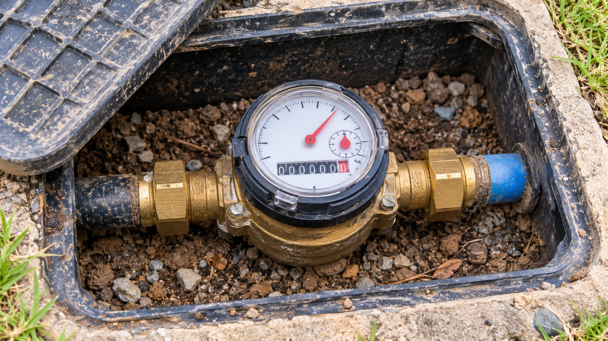
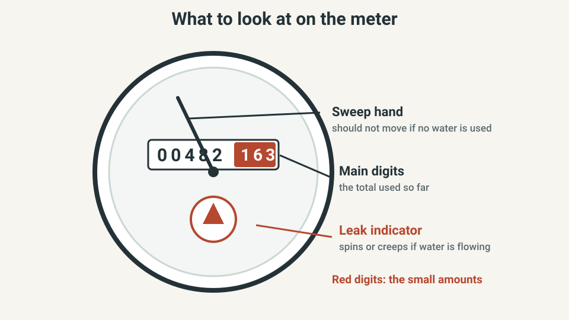
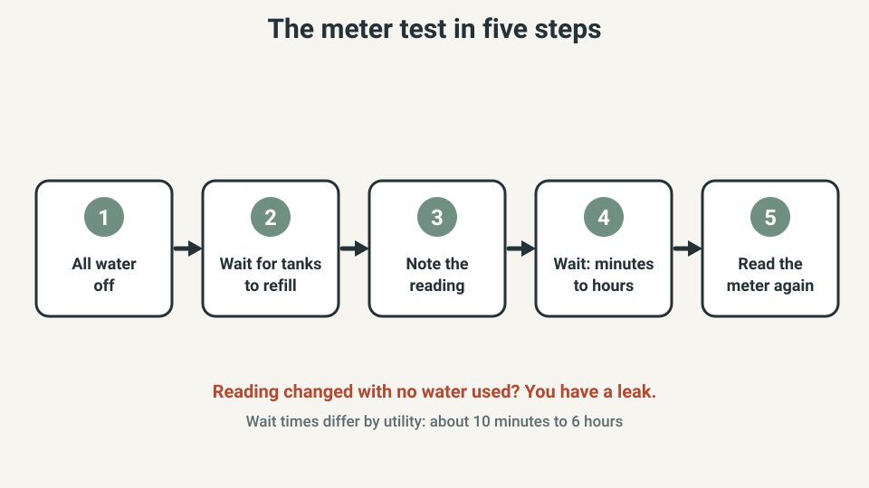
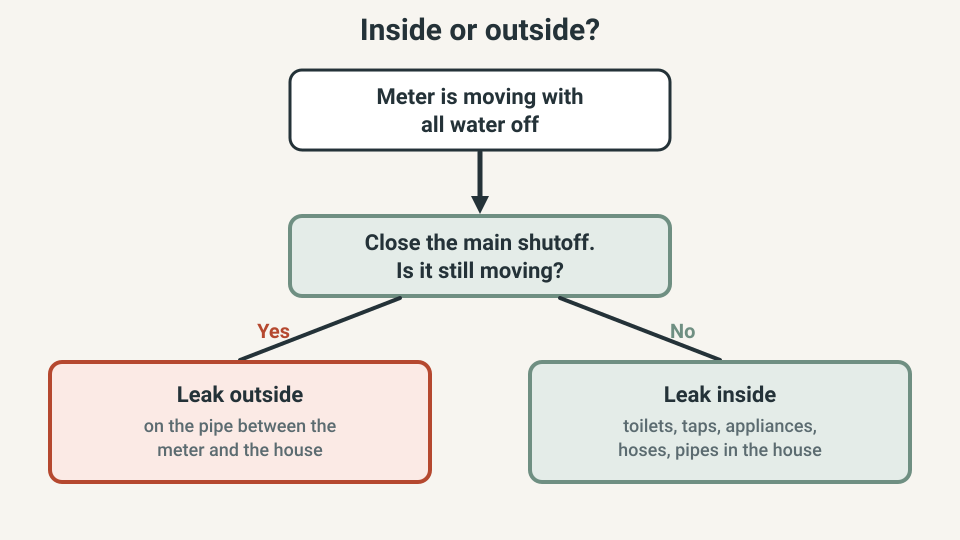

WEEKEND PROJECTS · WATER LEAKS
How to Read Your Water Meter to Find a Hidden Leak

A leak you cannot see can run for weeks. Your water meter will show it, because it keeps counting when nothing should be using water. This guide shows how to read the dials, run the test, and use your main shutoff to tell an inside leak from an outside one. It covers US and UK meters. If water is already escaping, start with our leak guide. I am not a plumber.
The quick answer
- Turn off all water inside and outside the house, including the irrigation controller, ice maker and washing machine.
- Find the meter and open its lid only if it is safe to do so.
- Look at the leak indicator, the sweep hand or the digital flow rate. Movement with everything off is a sign of a leak.
- If nothing moves, note the reading, wait, and read it again. A change means a slow leak.
- Close the main shutoff and look again. If the meter still moves, the leak is on the pipe between the meter and the house. If it stops, the leak is inside. Not sure where your valve is? See our main shutoff guide.
Quick plan
| Item | Detail |
|---|---|
| Time | From about 10 minutes for a fast check to a few hours, or overnight, for a slow leak. The wait times come from the utilities quoted below |
| Cost | Free. A screwdriver, a pen and paper |
| Best for | An unexplained high bill, a meter that seems to move, or a damp patch you cannot explain |
| Goal | Confirm there is a leak, then tell whether it is inside or outside |
Find your meter
US. Portland says a home meter is generally in the ground near the curb in front of the house, in a box with a lid marked "Water Meter". Chandler, Arizona says it is generally near the sidewalk in front of the home, in a direct line with the main outside faucet. Both warn that critters can hide in the box, so open it carefully. Portland adds that lids can be heavy and should be put back each time.
UK. CCW says the meter and outside stop valve are normally at the property boundary. The meter may be a few feet below ground. CCW says not to lift a heavy metal cover, and to lift an inspection cover with a screwdriver blade and remove any polystyrene protector. Some meters are inside the home. United Utilities says your bill shows where yours is. Check an outside meter only if it is safe to do so.
No meter, no test. United Utilities says that if you do not have a meter you cannot do it, and should check the usual leak hotspots instead.
How to read the meter dials

Leak indicator. Portland says most home meters have a leak detection dial, shaped like a red or blue triangle or a blue snowflake. It may spin fast when water is running and move slowly if water is dripping.
Sweep hand. If there is no indicator, Chandler says to watch the sweep hand near the centre. It should not move if no water is in use. Portland says the same.
Digital meters. Chandler says to watch the flow-rate screen for at least 10 flashes. If any flash shows more than zero, there is a continuous leak.
Units differ. Portland measures in CCF, a unit of 100 cubic feet or 748 gallons. Chandler measures in thousands of gallons. In the UK, CCW says meters record cubic metres. Black-and-white digits are whole cubic metres, and the red digits are the decimals. Read the red digits too, because a small leak shows there first.
The meter test, step by step

- Stop all water use, inside and outside. Chandler lists showers, sinks, washing machines, ice makers and any water-using appliance, and says to turn off an irrigation controller.
- Let tanks refill. United Utilities says to wait 30 minutes so any tanks or cisterns can fill before the first reading.
- Look at the meter. A spinning leak indicator, a moving sweep hand or a non-zero flow rate means a possible leak.
- If nothing moves, record the reading with every digit, including the red ones, and use no water.
- Wait, then read again. Chandler says to wait 10 minutes. Portland says several hours. United Utilities says 3 to 6 hours. A changed reading means a slow leak.
The wait times differ, so I would not treat any one as a rule. A longer wait is more sensitive. My suggestion is to take the first reading at bedtime and the second in the morning, with nobody using water in between.
Is the leak inside or outside?

Once you have a moving meter, close the main shutoff. In the UK this is the internal stop tap. Our main shutoff guide shows how to find and operate it.
- Close the main shutoff. Portland says the valve is usually near the water heater, in a basement or garage. Chandler says it is usually under the outside faucet near the front of the house.
- Prove it works. Portland says to open a faucet. If water still flows after several seconds, the valve is not working and you cannot tell inside from outside.
- Check the meter again. If it still moves, the leak is on the pipe between the meter and the shutoff. Portland calls this a possible underground leak and Chandler calls it the service line. CCW describes it as a leak on the outside supply pipe.
- If the meter has stopped, the leak is inside. CCW adds a check: reopen the inside stop valve and go back to the meter, and if it moves again the leak is inside the property.
If the leak is inside
Portland lists leaking toilets, faucets, appliances and garden hoses as the likely sources. United Utilities adds overflow pipes, loft tanks, pipes under sinks, radiators, and the hoses behind washing machines and dishwashers.
Toilets are the usual suspect. Chandler says to put 2 or 3 drops of food colouring in the tank, wait 15 to 30 minutes, and see whether the colour reaches the bowl. If it does, the rubber flapper needs replacing.
Meter movement can also come from things that are not faults. Chandler names an automatic pool filler, a leaky irrigation valve and an evaporative cooler. Switch those off before you decide.
If the leak is outside
Portland lists the signs of an underground leak: an unexplained rise in water use, a drop in pressure, wet or unusually green, mossy or soft ground, water pooling, cracked or lifted paving, and rust or dirt in the water. It suggests a professional leak detection company to pinpoint the spot, and a contractor for the repair. A permit may be needed. I would not dig yourself.
Who pays. It depends on the utility. Portland says the owner is responsible for the pipes from the meter to the house, and Chandler says leaks after the meter are the homeowner's. In the UK, CCW says the supply pipe from the house to the boundary is yours, and the company covers the main and the communication pipe. If you rent, United Utilities says to tell your landlord, whose job it is to find and repair it.
Possible refunds. CCW says a company should offer a one-off leakage allowance after repair, and that some offer help locating and repairing a supply pipe leak. United Utilities says a metered household that repairs within 6 weeks may be able to claim. Portland says a timely repair can qualify for a bill adjustment. Terms vary, so ask your utility before repairing. Check your home insurance too.
What the meter test can miss
- Irrigation and pools. Chandler says the meter may not detect leaks in irrigation systems or pools unless they are running or filling.
- Slow leaks. A short wait can miss a drip. Portland says to wait several hours for a slow leak.
- Intermittent leaks. A leak that only shows when something refills, such as a tank or a softener, may be missed in a short test. The 30-minute tank wait from United Utilities helps here. This point is my reading, not a quoted rule.
When to call a plumber or your water utility
Call a plumber when:
- The meter moves after the main shutoff is closed and you think the leak is on your side.
- The meter stops, but you cannot find the leak inside.
- The main shutoff does not stop the water.
Call your water utility when:
- The leak is at the meter itself or its box. Chandler says to contact its water distribution team for a leak at the meter.
- You want to know who is responsible, or whether it offers repair help or a leakage allowance.
If water is already escaping, follow our leak guide. A sensor can catch the next leak sooner: see where to put water leak sensors. In cold weather, read our frozen pipes guide.
Frequently asked questions
Can I do the meter test if I have no water meter?
No. United Utilities says that without a meter you cannot do this test and should check the usual leak hotspots instead, such as toilet cisterns, taps, overflow pipes and the hoses behind washing machines and dishwashers. Some UK homes are unmetered.
How long should I wait between readings?
It depends on the source. Chandler, Arizona says 10 minutes for a slow leak, Portland says several hours, and United Utilities says 3 to 6 hours. A longer wait catches smaller leaks, so an overnight test is the most sensitive.
Does a moving leak indicator always mean a leak?
No. Chandler says meter movement can also come from an automatic pool filler, a leaky irrigation valve or an evaporative cooler. Portland says a moving indicator means you "may" have a leak, so confirm it with a second reading.
Who pays to fix a leak on the pipe outside?
It depends on where the leak is and on your utility. Portland says the owner is responsible for the pipes from the meter to the house. In the UK, CCW says the supply pipe from your house to the property boundary is yours, and the water company covers the main and the communication pipe.
What if my main shutoff does not stop the water?
Then the test cannot tell inside from outside. Portland says that if water still flows from a faucet after the valve is closed, the valve is not working. Call a plumber, and read our main shutoff guide.
Can I get money back for the water lost to a leak?
Sometimes. CCW says a company should offer a one-off leakage allowance after a supply pipe leak is repaired. United Utilities says a metered household that repairs within 6 weeks may be able to claim. Portland says a timely repair can qualify for a bill adjustment. Ask your own utility.
Is it safe to open the meter box?
Take care. Portland warns that lids can be heavy and that bugs or small animals can hide inside. CCW says not to lift a heavy metal cover and to use a screwdriver blade on an inspection cover. Only check an outside meter if it is safe to do so.
Keep going
- What to do first when you discover a water leak
- How to find and operate your main water shutoff
- Where to put water leak sensors
Sources and further reading
- City of Portland Water Bureau, how to check for leaks (US): portland.gov how to check for leaks
- City of Chandler, Arizona, how to check for a water leak (US): chandleraz.gov check for a water leak
- CCW, suspected leak on a private water supply (UK): ccw.org.uk leak on your supply
- United Utilities, how to do a leak test (UK): unitedutilities.com leak test
Last reviewed: November 25, 2026. Utilities differ on wait times, meter units and who owns which pipe, so use your own utility's page where it differs. I did not find a source I trust for fixing a leak at the meter or an underground leak at home, so this guide sends you to a plumber or your utility for both. This is not legal or plumbing advice.